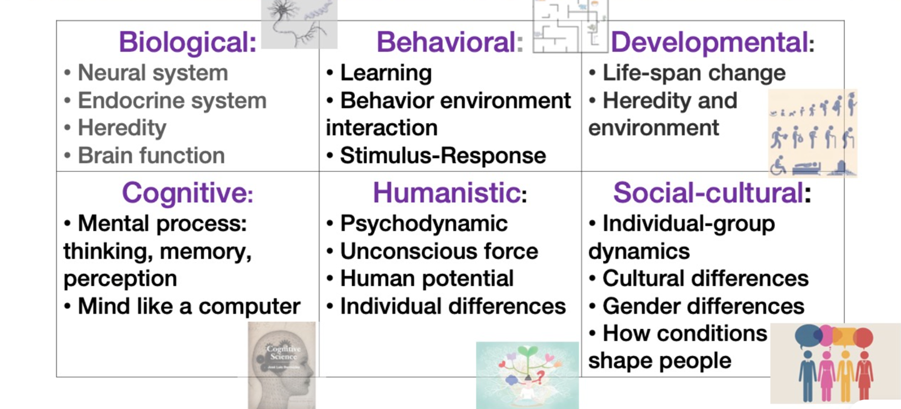

随笔选辑 - 不/存在
返回目录
不/存在
今天没课，也不太想干活，来随机写点东西。
24 年 12 月 31 号，元旦的前一天，在知乎偶然了解到了《不/存在的你，和我》，据说是一个比较电波和比较哲学的国 gal，令我颇感兴趣。于是我即刻就玩了一下这部小品级的作品。Tulpamancy 对我来说是一个完全陌生的词汇——即使到了今天我也不能讲明白它是什么，希望在上完一学期的心理学概论之后能找到点线索。不过我多少还是比较能理解和接受这些奇奇怪怪的东西：它们即使不符合我对世界的建构，也往往能帮我更好地理解其他人。
我没有过幻想朋友，曾经也没有。但是这个游戏还是让我想起了以前的一些经历。据称小时候我最大的兴趣爱好就是一个人去小区楼下玩，其实也没有什么好玩的，只是待在一个比较开阔的地方走来走去、胡思乱想而已。思考的内容从数学题、游戏攻略、自创世界观到一些不太方便讲的东西，可以说是天马行空。后来等我有了电脑以后，经常会把想的一些东西记在电脑里某个除了我没人能找到的隐蔽文件夹里，这可能也是我之后写博客文章这种习惯的雏形。在没有人的时候，我有时候也会将琐碎的思考脱口而出，形成一些不连续的词语。
这和《不/存在》有什么关系呢？在我看来，无论是写在电脑里还是说出来，都是一种从思维到客观实在的转换。本质上我想要做的，是把想法“说”给某个物体听。和 Tulpa 不同的是，Tulpa 有一个具体的形象，有一套自己的行动逻辑，是类似于大脑的第二线程的存在；但是我需要的只是一个招之即来、挥之即去的被动的客体；不过相似之处可能就是如果被其他人看到了这种交互行为，都会被当成神经病。可能就是由于这种习惯的影响，我说话时比较注意逻辑的细节，在不少场合都会经过多次脑内排练才能将一句话说出来。
然而，大多数时候和人交流是简单的。很多时候只要用一些公式就可以完成所有的日常交流需要，而且这个公式可以定期改变，从一些固定句式（“这么…”，“太有…了”，“很容易就…”）到一些固定短语（“神人”，“闹麻了”，“没有人类了”，“基米精神”）任你选择。这种说话方式很蠢但最省事，只要多抄袭别人的公式形成自己的公式就行了（上面的七个例子全是抄别人的）。但是长久这样和人隔着一层滤子说话就会让自己非常不舒服，总有一些自认为深刻的东西想要表达，不过这些东西要么是过于晦涩，要么是过于极端，没有人想听，于是就只能说给“某个物体”听去了。这些博客文章本质上也是这种心态的产物，但是写在这里的话基本上还是美化过之后给人看的版本。
正好上周课提到了心理学里的六种主义，我觉得这个事情非常有意思。作为一个什么都没学过的人，我觉得我可以先锐评一下，等之后再看看想法有没有什么变化。

-
生理心理学：这是不是最有道理的方向？研究一个黑盒的最理想化的方法就是把它拆开，不过这可能挺难的。
-
行为主义：没道理的。行为主义感觉和古典经济学差不多，能指导一些现实，但是没有更多的作用，也没有理论价值。唯象的理论自有其局限性。
-
发展心理学：不懂。
-
认知主义：我觉得是最有趣的一种理论，可能也是和 AI 关系最近的理论。如果不能解开一个黑盒，那么我们可以根据输入输出推测其内部结构。把大脑当成一个计算机，把思维，认知，记忆当成特定的程序组件，真的是听起来就很有意思，而且感觉某种程度上是正确的。
-
心理分析：小时候我觉得是世间真理，现在感觉不是了。但我觉得心理分析是艺术创作的最佳背景板。电影、游戏作品里的角色动机我都默认用分析的理论去理解，这真是一个方便的工具，无论是对于故事的建构者还是欣赏者。我觉得心理分析的神奇之处就在于，用它作为公理构建一个属于异世界的心理学没人觉得违和，而且充满戏剧性张力。可能我会这么想也是受到了一些作品和一些人的深刻影响…
-
社会心理学：不懂。但是我一直相信社会学就是所有人类心理学的加总，这可能是某种心理主义的观点…
对于理解 Tulpa 而言，我觉得认知主义应该是比较容易的吧。就像我之前说的，Tulpa 大概就相当于大脑的另外一个线程。自己和 Tulpa 是一个人还是两个人可能主要取决于你的视角：从主线程的角度来看，Tulpa 是异己；但是从整个内核的角度来看，所有东西都是统一的。在《不/存在》的一周目，我不出意料地打出了掐似结局——我想像了一下，在没什么心理问题的情况下，fork 一个自己确实是没有什么道理，好像是种对计算资源的极大浪费！
感觉按照惯例最后应该放首歌。Tia 的这首《存·不存在》除了名字之外和今天的主题并没有什么关系。不过我忽然想到：这么好听的歌最后得了第六名；可能很多人都会和我一样执着于某种另一些人不大理解的东西吧，甚至执着于“另一些人不大理解”这一事实，但希望大家最后都能找到自己的出路。